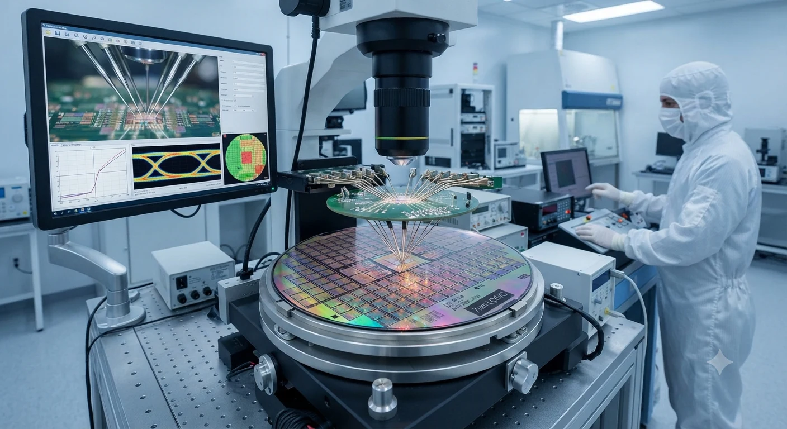

A semiconductor is a material whose electrical behaviour can be controlled. That simple property enables switches, amplifiers, sensors, memories and processors. The finished chip is small, but the system that makes it possible spans chemistry, physics, software, precision machinery, logistics, design and human judgement.
Materials, conductors and band structure
Conductors such as copper contain mobile electrons that can move readily when an electric field is applied. Insulators hold their electrons more tightly and resist current. Semiconductors sit between those extremes. Their conductivity is neither fixed nor incidental: it can be changed by temperature, light, impurities and applied voltage. This controllability is why semiconductors are useful as the basis of electronic logic.
At an atomic scale, electrons occupy allowed energy ranges. The valence band contains electrons involved in bonding, while the conduction band contains states in which electrons can move through a crystal. The energy gap between these bands is important. In a semiconductor, the gap is large enough to limit current at ordinary conditions but small enough that energy, doping or an electric field can create useful carriers. A missing electron behaves like a positively charged hole, so both electrons and holes can participate in conduction.
Silicon became the industry’s central material because it is abundant, forms a stable oxide, supports mature processing and can operate across many practical temperatures. Its oxide is especially valuable for insulated gate structures. Other materials remain important where silicon is not ideal. Gallium arsenide can serve high-frequency and optoelectronic applications, while gallium nitride and silicon carbide are valuable for high-power switching, heat and voltage. Material choice is an engineering decision that balances performance, cost, reliability and manufacturability.
Doping and charge carriers
Pure silicon is not a useful switch by itself. Controlled quantities of other elements are introduced to change the concentration and type of charge carriers. This process is called doping. Donor atoms contribute extra electrons and create n-type material. Acceptor atoms leave an electron vacancy, creating p-type material. The crystal remains broadly intact, but its electrical behaviour becomes deliberately asymmetric and predictable.
Where p-type and n-type regions meet, carriers diffuse across the boundary and leave behind fixed charged ions. The resulting depletion region produces an internal electric field. This junction is the starting point for the diode. Applying voltage in one direction can reduce the barrier and allow substantial current; reversing it enlarges the barrier and limits current, subject to breakdown conditions. Engineers use junction geometry and doping profiles to tune speed, leakage, voltage and heat.
Doping is not a crude colouring process. Concentration, depth, activation and uniformity all matter, and later thermal steps can cause atoms to move. Modern manufacturing measures these properties across a wafer because a small variation can affect millions of devices. The same principle explains why process control is as important as circuit design: a beautiful layout cannot compensate for inconsistent material behaviour.
Diodes, transistors and the MOSFET
A diode can rectify alternating current, protect a circuit, detect a signal or emit light when made from an appropriate material. A transistor adds control. It uses a small input signal or electric field to regulate a larger current, making amplification and switching possible. Digital computing depends on transistors acting as repeatable on and off states, while analogue systems use the continuous relationships between voltage and current.
The metal-oxide-semiconductor field-effect transistor, or MOSFET, uses an insulated gate to control a channel between source and drain. In a common n-channel device, a suitable gate voltage attracts electrons near the surface and creates a conductive path. Because the gate is insulated, steady-state gate current can be very small. The geometry, threshold voltage, channel length, oxide quality and surrounding structures determine how the device behaves.
One transistor is useful; billions working as a designed network are transformative. Complementary MOS, or CMOS, pairs n-channel and p-channel devices so that ideally one network pulls a signal high while the other pulls it low. This arrangement greatly reduces static power in a stable logic state. Real chips still consume dynamic power while signals switch and leakage power as dimensions shrink, so architecture and software decisions are connected to transistor physics.
Integrated circuits and chip architecture
An integrated circuit places active devices, passive elements and interconnects on a common piece of semiconductor. The circuit may be digital, analogue or mixed-signal. Digital logic represents information with defined voltage ranges and uses gates, registers and state machines. Analogue circuits work with continuous signals such as sound, light, temperature or radio frequency. Mixed-signal chips translate between the two worlds through converters, clocks, filters and control logic.
Chip architecture describes how a system divides work. A CPU is designed for flexible general-purpose instruction execution. A GPU contains many parallel processing resources suited to graphics and other data-parallel workloads. Memory chips optimise storage density, access patterns and retention. AI accelerators arrange arithmetic and memory movement around the operations used by particular models. None is universally best. A useful design matches computation, data movement, latency, power and software support to a real workload.
Performance is increasingly limited by moving data rather than performing an arithmetic operation. Caches keep frequently used information close to a processor. Memory hierarchies trade capacity for speed. Interconnects connect cores, memory controllers, accelerators and input-output devices. This is why a faster transistor does not automatically produce a faster computer. The surrounding architecture must feed it, cool it and expose its capabilities through a stable software interface.
Learn the practical hardware context in ASARK’s processor guide, graphics-card guide and broader computing guide. For the visual introduction to the field, return to the semiconductor technology hub.
VLSI design from idea to layout
Very-large-scale integration, or VLSI, is the discipline of placing a very large number of devices into a reliable system. A design team begins with requirements: what must the chip do, how quickly, with what energy budget, in which environment and at what cost? Architecture turns those requirements into blocks and interfaces. Microarchitecture then decides how those blocks operate cycle by cycle.
Designers write register-transfer level, or RTL, descriptions using hardware description languages. RTL states how data moves between registers and how combinational logic transforms it. It is not ordinary software. A hardware description is synthesised into gates, and many operations happen in parallel. Verification therefore begins early, with simulations, assertions, formal techniques and carefully chosen test cases that examine normal behaviour and unusual states.
Synthesis maps RTL into a technology library whose cells have characterised timing, power and area. Physical design places those cells, routes their connections, builds clock networks and checks whether the layout satisfies electrical rules. Timing analysis asks whether signals arrive within their required windows. Power analysis considers switching, leakage and temperature. Physical verification checks geometry and connectivity against the manufacturing process. Electronic design automation tools help manage the scale, but engineers remain responsible for assumptions and trade-offs.
Verification is not a single final exam. A flawed specification can be perfectly implemented, and a passing simulation can miss an interaction. Teams use reference models, emulation, hardware prototypes, regression suites and post-silicon telemetry. Security properties also belong in the design flow: privilege boundaries, secure boot, update paths and isolation should be considered before layout makes a change expensive.
How a wafer becomes a chip
Fabrication begins with a highly pure silicon wafer. The wafer is cleaned, coated and patterned through repeated cycles. Photolithography transfers a mask-defined pattern into a light-sensitive resist. Development removes selected portions of that resist, exposing areas for a later operation. Modern lithography uses sophisticated optics and multiple patterning strategies; at a conceptual level, its purpose is to place tiny features in repeatable positions across a large surface.
Deposition adds thin films. Etching removes selected material, either by chemical reaction or by energetic plasma. Ion implantation introduces dopants at controlled energies, followed by thermal treatment that repairs the lattice and activates the dopants. These steps create wells, source and drain regions, gates, spacers and contacts. The sequence is repeated with alignment between layers. Each layer is only useful when it connects correctly to the layers around it.
After devices are formed, many levels of interconnect join them. Insulating films separate metal layers, while vias connect one level to another. Copper and other materials are patterned into a network that carries power and signals. Planarisation keeps the surface sufficiently flat for the next layer. At the end of the front-end and back-end process, the wafer contains many copies of the design, called dies. Electrical probing identifies dies that meet the specification before they are separated and packaged.
Fabrication is a statistical process. Operators monitor particles, film thickness, critical dimensions, overlay, stress, defect density and electrical test structures. A small defect can affect one die or many dies depending on its size and location. The goal is not merely to produce a functioning transistor but to produce a predictable population of devices at an economically viable yield.
Process nodes, cleanrooms and yield
A process node is a generation label, not a single ruler measurement that tells the complete geometry of a transistor. Naming has evolved, and comparable labels from different manufacturers may represent different combinations of gate structure, density, performance and power. Useful comparisons examine transistor density, achieved voltage, speed, leakage, design rules and the libraries available to designers rather than relying on a number alone.
Cleanrooms reduce airborne particles because a contaminant can be large compared with a device feature. Air is filtered and circulated, temperature and humidity are controlled, and people wear protective garments. Still, cleanliness is only one part of control. Chemicals must be consistent, machines calibrated, wafers tracked and recipes managed. Statistical process control helps teams see drift before it becomes a large lot of unusable product.
Yield is the share of manufactured dies that meet specification. Larger dies expose more area to possible defects, so yield and product design are connected. Redundancy, repairable memory rows, design-for-manufacturing rules and careful testing can improve practical results. A leading process may offer impressive density but require expensive equipment, complex masks and long development. A mature process can be a better choice for a sensor, controller or industrial product that values longevity and cost.
Fab economics involve enormous fixed investment, utilisation, depreciation, energy, water, chemicals, workforce and supply-chain coordination. A foundry must serve many designs while protecting process knowledge and delivery schedules. Designers, in turn, must use the foundry’s process design kit correctly and account for variation. The partnership between design and manufacturing is a central feature of modern chips.
Advanced packaging and chiplets
Packaging protects a die, provides electrical connections and moves heat away from active circuits. It is also becoming part of architecture. Traditional packages connect one die to a substrate, while advanced approaches place multiple dies together or stack them vertically. Shorter connections can improve bandwidth and energy efficiency, but they introduce new challenges in assembly, testing, thermal expansion and known-good-die management.
Chiplets divide a system into smaller functional dies connected through a package. A processor might combine compute tiles, cache, input-output and memory interfaces made with different processes. This can improve reuse and allow each block to use a suitable technology. It can also reduce the cost of redesigning a large monolithic die. The trade-offs include package complexity, interconnect standards, test coverage, security boundaries and the need to verify the complete system.
Heterogeneous integration means more than placing parts close together. Engineers must reason about power delivery, heat paths, signal integrity, mechanical stress and software visibility. High-bandwidth memory, for example, depends on both memory stacks and the package that connects them. As computation becomes more data-intensive, the package can be as strategically important as the transistor layer.
Power semiconductors and compound materials
Power devices manage energy rather than only representing information. They switch, convert and regulate electricity in chargers, motor drives, solar inverters, trains, data centres and industrial equipment. Their priorities include low conduction loss, low switching loss, voltage blocking, thermal performance and dependable operation over years. A power transistor is judged by the complete converter and cooling system, not by a laboratory figure alone.
Silicon carbide supports high electric fields and high-temperature operation, making it useful in some electric-vehicle inverters and renewable-energy systems. Gallium nitride can switch quickly and is attractive for compact chargers and high-frequency power conversion. These compounds are not replacements for silicon in every situation. Substrates, defects, gate reliability, packaging, cost and available manufacturing capacity all influence where they make sense.
Power electronics shows the relationship between chips and infrastructure particularly clearly. A more efficient switch can reduce losses across millions of devices, but the benefit depends on controls, magnetics, thermal design, maintenance and how electricity is generated. Responsible engineering therefore measures the whole lifecycle rather than celebrating a component in isolation.
Automotive, industrial and global supply chains
Cars use semiconductors for power conversion, sensing, safety systems, communication, infotainment and control. Industrial equipment uses them to monitor processes and drive motors. Phones and computers combine processors, memory, radio components, sensors and power-management circuits. A shortage of one specialised component can interrupt a whole product because value is organised as a chain of dependencies.
The chain includes raw materials, gases, wafers, lithography systems, deposition and etch equipment, design software, packaging, testing, logistics and skilled labour. No single region supplies every capability equally. This concentration creates efficiency but also vulnerability to disasters, export controls, transport disruption, energy constraints and demand cycles. Resilience is not the same as producing everything locally; it can mean qualified alternatives, transparent inventories, compatible standards and investment in people.
India’s semiconductor ecosystem includes design centres, an expanding policy focus on fabrication and packaging, universities, electronics manufacturing and a large pool of engineering talent. Building durable capability requires more than announcing a facility. It requires reliable utilities, process training, supplier networks, research links, patient capital, quality systems and products that can sustain demand. Design services and verification are valuable parts of the ecosystem, as are education and maintenance skills.
For students, semiconductor careers range from device physics and process engineering to RTL design, verification, physical design, packaging, reliability, test, applications and technical writing. A strong foundation in mathematics, electronics, programming and measurement is useful. So are habits of documentation and humility: a result that cannot be reproduced or explained is not yet a dependable engineering result.
Memory, connectivity and the data path
Memory devices show how a semiconductor can preserve information as well as calculate. Dynamic random-access memory stores a charge in a small cell and refreshes it regularly. Static memory uses a circuit that holds a state while power is available and is faster but less dense. Flash memory traps charge so that data can remain when a device is switched off. Each approach balances density, speed, endurance, cost and energy.
Memory is not a single layer in a computer. Registers sit closest to a processor, followed by several cache levels, working memory and persistent storage. The hierarchy exists because fast storage is expensive in area and power. Software performance often depends on whether data is reused while it is close to the compute unit. Architects therefore design algorithms, caches and interconnects together rather than treating memory as an afterthought.
Connectivity circuits translate between domains. SerDes blocks convert parallel data into high-speed serial streams and recover timing at the other end. Radio chips mix signals, filter noise and manage power across changing conditions. Sensor interfaces amplify small signals and convert them into digital values. These functions rely on analogue behaviour even when the product is described as a digital device. Mixed-signal design remains one of the places where physical intuition, measurement and modelling meet.
Test, validation and the life of a design

When a wafer is complete, automated test equipment measures electrical properties and checks whether each die meets its specification. Some tests run at normal conditions; others apply voltage, temperature or timing margins. Built-in self-test circuits can exercise memories and logic. The results support binning, repair, traceability and decisions about whether a process is drifting.
Validation continues after packaging. A chip may work in a simple test and fail when many blocks switch together, when a package heats up or when software exercises an uncommon sequence. System teams combine laboratory measurements with representative workloads. They test electromagnetic compatibility, power behaviour, interfaces, boot processes and recovery. For automotive, medical, aerospace and industrial products, qualification can involve long environmental and lifetime programmes.
Documentation gives these tests durable meaning. A data sheet defines limits and conditions rather than promising that every device behaves identically. Errata records known issues and workarounds. Revision control lets teams identify which design, mask set, firmware and test result belong to a product. Traceability may sound administrative, but it is part of engineering safety when devices remain in the field for years.
Why chip manufacturing is difficult to scale
Semiconductor production combines a long learning curve with expensive equipment. A new facility needs buildings, vibration control, clean utilities, chemical systems and tools whose cost and installation time are substantial. The factory must then qualify recipes, train teams and reach a stable yield. The economic return depends on keeping equipment productive while demand changes across phones, servers, vehicles and industrial products.
Design has its own fixed costs. Advanced chips require intellectual-property libraries, verification infrastructure, mask sets, packaging development, software enablement and years of engineering. A larger market can spread those costs across more units, while a specialised chip may justify a mature process that is cheaper to qualify. This is one reason the industry contains both leading-edge facilities and older nodes that remain essential.
Demand cycles can make planning difficult. Customers may over-order when components are scarce and reduce orders when inventories recover. Building capacity takes longer than changing a forecast. A resilient industry uses clearer demand signals, diversified suppliers, strategic inventory and agreements that recognise the cost of maintaining capability. Public policy can help with research, workforce and infrastructure, but durable production still depends on technically sound products and customers.
India, education and the human system
India’s opportunity in semiconductors is broader than a single fabrication plant. The country already contributes to chip architecture, verification, embedded software, electronic design automation, packaging discussions, electronics manufacturing and research. New facilities and programmes can deepen that base when they connect industry with universities and create paths from laboratory skills to production discipline.
A healthy ecosystem needs technicians who maintain tools, engineers who understand process windows, designers who can close timing, researchers who test new materials and managers who can coordinate a complex supply chain. It also needs teachers, technical writers, safety professionals and people who can explain a product’s limits. Education should combine theory with measurement, simulation, clean manufacturing practice and the habit of recording what actually happened.
Students can begin with semiconductor physics, digital logic and analogue circuits, then explore Python or another programming language, hardware description languages, computer architecture and probability. Open-source design tools and small FPGA boards can make abstract concepts tangible without pretending that a home project reproduces industrial fabrication. Internships, laboratories and mentorship add context. The most valuable skill is learning to ask which assumption a result depends on.
Human-centred development also asks who benefits from a chip and who carries its cost. Affordable medical instruments, efficient agricultural equipment, accessible communication and reliable public infrastructure may matter more than headline performance. Engineers can contribute by designing for repair, documenting safety conditions and making products usable by people with different resources and abilities.
Systems, standards and the people behind chips
A semiconductor only becomes useful as part of a system. The processor depends on memory, power regulation, clocks, sensors, circuit boards, firmware, operating software and cooling. Improving one component while ignoring the rest can move a bottleneck rather than remove it. A faster accelerator may wait for data; denser memory may add heat; a smaller device may require more complex packaging. Systems engineering therefore asks how information, energy and heat move across the whole product.
Hardware and software are designed together. Compilers translate programs into operations a processor can execute, while drivers connect operating systems to specialised devices. Firmware establishes the earliest trusted state and manages functions close to the hardware. This relationship explains why a chip specification cannot describe the complete user experience. Stable tools, clear documentation and long-term updates can be as important as peak benchmark performance.
Measurement gives the industry a shared language. Designers and manufacturers need agreed methods for dimensions, electrical behaviour, materials, reliability and safety. Reference materials and calibrated instruments make results comparable across laboratories. Standards help separately produced parts interoperate. They create dependable foundations on which organisations can innovate without forcing every user to solve compatibility again.
Semiconductor work spans physics, chemistry, materials, electronics, architecture, verification, software, manufacturing, statistics and policy. Technicians maintain equipment; researchers explore materials; designers express behaviour; verification engineers challenge assumptions; packaging teams connect dies to systems; reliability teams study ageing. Education is strongest when it combines theory with safe practice, teamwork and honest communication about uncertainty.
Lifecycle thinking and responsible access
The environmental footprint of electronics begins before a device is switched on. Purifying materials, producing wafers, running cleanrooms, moving components and assembling products require energy and water. The relevant question is how transparently that impact is measured and reduced. Efficient facilities, water reuse, lower-impact chemistry and renewable electricity can help, while careful reporting lets communities judge progress rather than promises.
Product design shapes the other end of the lifecycle. Durable hardware, replaceable modules, repair information and sustained software support can keep useful products in service. Recovery is difficult because packages combine metals, ceramics, polymers and silicon, yet better identification and collection can improve material recovery. Efficiency should be evaluated at system level: a low-power chip is valuable when the complete service delivers useful work with less energy.
Access matters alongside performance. Shortages reveal how health equipment, vehicles, communications and public infrastructure depend on components users rarely see. Resilient supply means understanding critical dependencies, qualifying alternatives, maintaining trustworthy inventories and investing in skills. Policy can support research and manufacturing while still requiring environmental care, worker safety and accountable public investment.
Responsible development asks who benefits. Affordable devices can widen access to education, accessibility tools and scientific instruments. Poorly supported hardware can create waste or exclude people through premature obsolescence. Human-centred design treats security, longevity, accessibility and energy use as requirements. The future of chips is not simply a contest for smaller features; it is an effort to build dependable systems that help people accomplish meaningful work.
That broader measure keeps technical ambition connected to human value, scientific integrity and responsible stewardship.
Good roadmaps therefore include more than device density. They track energy per task, memory movement, manufacturing yield, product lifetime and the availability of tools and skills. They also leave room for unexpected discovery. A research direction may fail at commercial scale yet reveal a measurement method or material useful elsewhere. Honest reporting of both progress and limits helps investment flow toward evidence instead of spectacle. It gives engineers permission to solve the whole problem: a secure, serviceable and efficient system whose benefits remain understandable to the people who depend on it.
From laboratory evidence to everyday reliability
New devices usually begin as carefully measured experiments rather than immediate products. Researchers compare structures, materials and operating conditions, then ask whether the effect can be repeated across samples. A promising result must survive variation, temperature, ageing and integration with existing processes. Manufacturing teams need controls that work across many tools and wafers, not one exceptional device.
That transition explains why semiconductor progress can appear uneven. A technique may be scientifically credible yet too expensive, difficult to inspect or incompatible with available packaging. Other ideas succeed because they solve an urgent system problem using mature equipment. Innovation includes selecting and refining ideas, not simply announcing them.
Consumers encounter the outcome through products that start quickly, preserve battery life, protect information and remain stable. These qualities come from thousands of choices below the interface. Designers who explain support periods, repair options and realistic performance help people choose systems based on lasting value rather than a single number.
Semiconductors also support less visible infrastructure: power conversion, medical instruments, factory control, communications and environmental sensing. Reliability expectations differ across these contexts. A disposable toy and an industrial safety controller should not share identical qualification. Engineering begins by understanding consequence, then matching architecture, components, tests and maintenance to that consequence.
Collaboration is the final enabling technology. No organisation controls every material, tool, design library and application. Shared standards and research allow specialised contributors to connect their work. Responsible competition can coexist with cooperation on safety, sustainability and education. This social infrastructure is as essential to the future of chips as any new transistor.
Designing the next computing foundation
Future progress will come from several directions at once. New transistor geometries can improve control, while backside power networks may separate power delivery from signal wiring. More layers can connect vertically, and optical links may move selected data with lower communication cost. Each technique introduces manufacturing, testing and thermal questions, so adoption depends on dependable system value rather than novelty.
Specialisation will continue beside general-purpose computing. A processor optimised for one workload can avoid unnecessary movement, but specialised hardware is less flexible when needs change. Designers decide which functions belong in fixed logic, programmable accelerators or software. Open interfaces can help systems evolve without discarding every component.
Memory and communication are central because moving data often consumes more time and energy than arithmetic. Engineers explore larger local memories, stacked memory, improved interconnects and computing closer to stored data. These ideas must preserve accuracy, security and programmability. A benchmark matters only when applications achieve it reliably.
Testing becomes harder when several dies share one package. Known-good dies, built-in self-test and standard die-to-die interfaces reduce uncertainty. Teams need visibility into failures that cross organisational boundaries. Clear responsibility for updates, qualification and field support prevents a sophisticated package from becoming an opaque product.
Trustworthy hardware requires provenance. Buyers need confidence that components are authentic, handled correctly and built from approved designs. Traceability, secure development, controlled manufacturing data and independent evaluation reduce counterfeit and tampering risk. These measures work best when they support repair and legitimate research rather than locking owners out.
Education must keep pace without chasing every headline. Fundamentals in circuits, logic, programming, probability and materials remain durable. Project work teaches trade-offs, documentation and collaboration. Responsible curricula also discuss labour, accessibility, environmental impact and security so future engineers see people affected by technical choices.
Public understanding matters because semiconductor policy affects infrastructure and large investments. Clear explanations distinguish a design facility from a wafer fab, packaging from fabrication and announced capacity from qualified production. That vocabulary helps communities ask better questions about jobs, water, energy, resilience and long-term value.
The enduring lesson is that scale is coordinated, not magical. Billions of devices operate because materials, tools, designs, factories, standards and people align within narrow tolerances. Appreciating that coordination makes the future realistic and inspiring: progress is built through patient measurement, shared knowledge and deliberate choices about what computing should serve.
Sustainability, reliability and responsible futures
Chip manufacturing uses significant electricity, ultra-pure water, chemicals and specialised materials. Facilities can reduce impact through efficient tools, water recovery, renewable electricity, responsible chemical handling and designs that deliver useful work with less energy. Product designers can extend value through repairable systems, long software support and reliable components. End-of-life recovery remains difficult because packages combine many materials, but design choices can make sorting and recycling more practical.
Reliability engineering studies how devices behave over time and under stress. Heat, electromigration, mechanical fatigue, radiation, electrical overstress and manufacturing variation can all cause failure. Qualification tests accelerate selected stresses, but field conditions still matter. Safety-critical systems need traceability, redundancy, monitoring and a clear response when a component does not behave as expected.
Security begins in silicon. Secure boot can establish a chain of trust, memory protection can limit damage, and hardware roots of trust can protect keys. Side channels, undocumented features, counterfeit parts and vulnerable update paths show why security must include manufacturing and the supply chain. Security is not a reason to make technology mysterious; clear documentation and independent evaluation help people use it responsibly.
The next generation may combine new transistor structures, backside power delivery, optical connections, three-dimensional integration, specialised accelerators and more efficient algorithms. Progress will not be measured only by smaller features. It will also be measured by useful performance per watt, dependable supply, accessible education, lower environmental cost and whether technology serves people with dignity. Semiconductor innovation is ultimately an exercise in shaping possibility: the best result is not the most complicated chip, but the one that reliably helps a real system do something worthwhile.
Continue with the practical VLSI guide, explore the role of chips in AI technology, or compare the orbital systems that depend on reliable electronics in the Space Technology Journal. Market infrastructure also depends on this physical foundation; read the Market Technology Journal for that connected story.